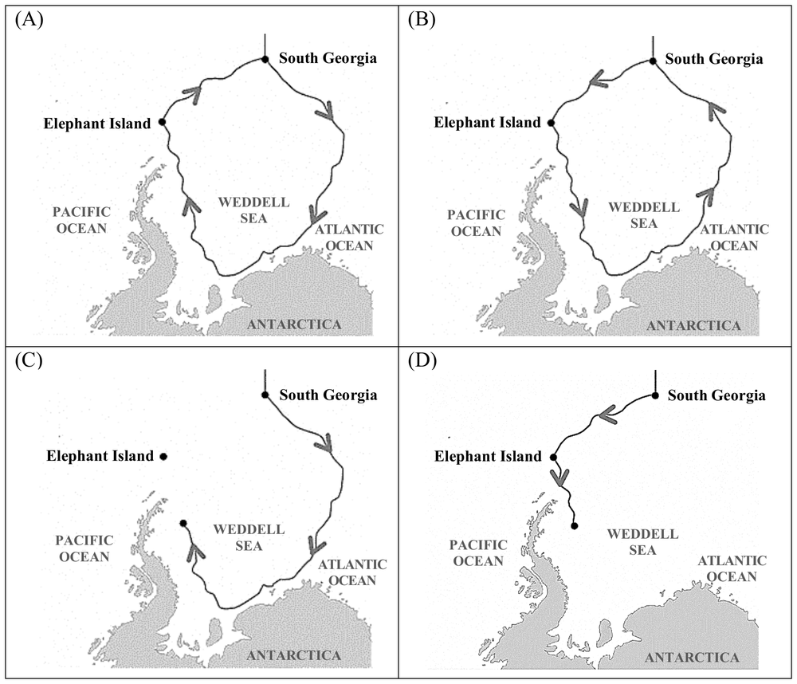

先讀文章、作答下方的題目，再展開最後的「看答案、依據句與逐段中譯」。也可以到互動練習線上作答，交卷後自動批改。
第 1 段In March 2022, the Endurance—the lost vessel of the famed polar explorer Ernest Shackleton—was found in Antarctica, 107 years after it sank. The news made headlines around the world, not only for the incredible achievement of the search team, but because the discovery marked the final chapter in a legendary story of extraordinary courage and perseverance.
第 2 段On August 4, 1914, Sir Ernest Shackleton, along with a skilled crew of 27, set sail on the Endurance toward the South Pole, hoping to make the first land crossing over Antarctica. From Plymouth, UK, the team arrived in Buenos Aires, Argentina, and on November 5 reached South Georgia Island, the last settlement of civilization en route to Antarctica. There, the real challenge began. Two days after leaving South Georgia in December, the Endurance encountered floating ice, and was soon completely trapped in pack ice.
第 3 段The worthy vessel held up for nine months, drifting down south slowly and then pushed northward by the ice. Gradually, the pressure from the ice buckled the planks. Freezing water rushed in and exacerbated the situation. On October 27, 1915, Shackleton ordered his crew to abandon the ship, pitching tents on the ice a mile and a half away. Weeks later, they watched the Endurance sink beneath the Weddell Sea.
第 4 段The next five months, the crew camped out on the pack ice as it drifted north, surviving on penguins, seals, and seaweed. Finally, the ice broke up enough for them to escape in lifeboats. For seven days, they sailed more than a hundred miles to the uninhabited Elephant Island. But the crew couldn’t survive long there. So, Shackleton made a dangerous attempt to get help: With five crew members, he sailed 800 miles over 16 days across freezing, stormy seas to South Georgia Island. Then the group hiked for 36 hours across the island to reach a whaling station.
第 5 段Help was almost at hand, but ice and bad weather hindered their return. On August 30, 1916, Shackleton finally got back to Elephant Island with a ship big enough to rescue the rest of his men. All the members of the expedition team survived, but the Endurance remained lost under the sea until its discovery in 2022.
35.What is this passage mainly about?
36.Which of the following idioms is closest in meaning to “exacerbated the situation” in the third paragraph?
37.According to the passage, which of the following is true about Shackleton and his Antarctic expedition?
38.Which of the following shows the correct route of the Endurance after leaving South Georgia?

| 題號 | 官方答案 | 答對率 | 鑑別度 |
|---|---|---|---|
| 35 | (C) | 52% | 49 |
| 36 | (D) | 43% | 72 |
| 37 | (A) | 51% | 66 |
| 38 | (C) | 27% | 20 |
答對率與鑑別度出處：大考中心 115 學年度學科能力測驗統計圖表：英文科答對率及鑑別度表
依據句：全文要讀完整篇才能判斷，不在某一句裡。
第 3 段Freezing water rushed in and exacerbated the situation.
第 2 段On August 4, 1914, Sir Ernest Shackleton, along with a skilled crew of 27, set sail on the Endurance toward the South Pole, hoping to make the first land crossing over Antarctica.
第 5 段On August 30, 1916, Shackleton finally got back to Elephant Island with a ship big enough to rescue the rest of his men.
第 2 段Two days after leaving South Georgia in December, the Endurance encountered floating ice, and was soon completely trapped in pack ice.
第 3 段The worthy vessel held up for nine months, drifting down south slowly and then pushed northward by the ice.
第 3 段Weeks later, they watched the Endurance sink beneath the Weddell Sea.
第 1 段2022 年 3 月，著名極地探險家 Shackleton 失落的船「堅忍號」在南極尋獲，距離它沉沒已經過了 107 年。這則消息登上世界各地的頭條，不只是因為搜尋團隊的成就驚人，也因為這次發現為一段充滿非凡勇氣與毅力的傳奇故事，寫下了最後一章。
第 2 段1914 年 8 月 4 日，Ernest Shackleton 爵士帶著 27 名經驗豐富的船員，搭乘堅忍號航向南極，希望成為第一支從陸路橫越南極大陸的隊伍。他們從英國普利茅斯出發，抵達阿根廷布宜諾斯艾利斯，11 月 5 日到達南喬治亞島，這是前往南極途中最後一個有人居住的地方。真正的考驗也從這裡開始。12 月離開南喬治亞島兩天後，堅忍號就碰上浮冰，不久便完全困在密集的浮冰群裡。
第 3 段這艘船相當堅固，在冰裡過了九個月都沒有解體，先是緩緩往南漂，接著又讓浮冰推著往北走。冰的壓力漸漸把船板擠得變形，冰冷的海水灌進船艙，情況更加惡化。1915 年 10 月 27 日，Shackleton 下令船員棄船，在一英里半外的冰面上搭起帳篷。幾個星期後，他們眼看著堅忍號沉入威德爾海。
第 4 段接下來五個月，船員在往北漂的浮冰上紮營，靠企鵝、海豹和海草維生。後來浮冰終於裂得夠開，他們才搭救生艇脫困，航行七天、一百多英里，到了無人居住的象島。可是船員沒辦法在島上久留，於是 Shackleton 冒險出海求救：他帶著五名船員，花了 16 天在冰冷又狂風暴雨的海上航行 800 英里，回到南喬治亞島，接著又在島上徒步 36 個小時，才抵達一座捕鯨站。
第 5 段救援看似近在眼前，冰和惡劣的天氣卻讓他們一直回不去。1916 年 8 月 30 日，Shackleton 終於開著一艘大到足以載走其餘隊員的船回到象島。探險隊全員生還，堅忍號卻一直沉在海底，直到 2022 年才重見天日。
第 1 段The news made headlines around the world, not only for the incredible achievement of the search team, but because the discovery marked the final chapter in a legendary story of extraordinary courage and perseverance.